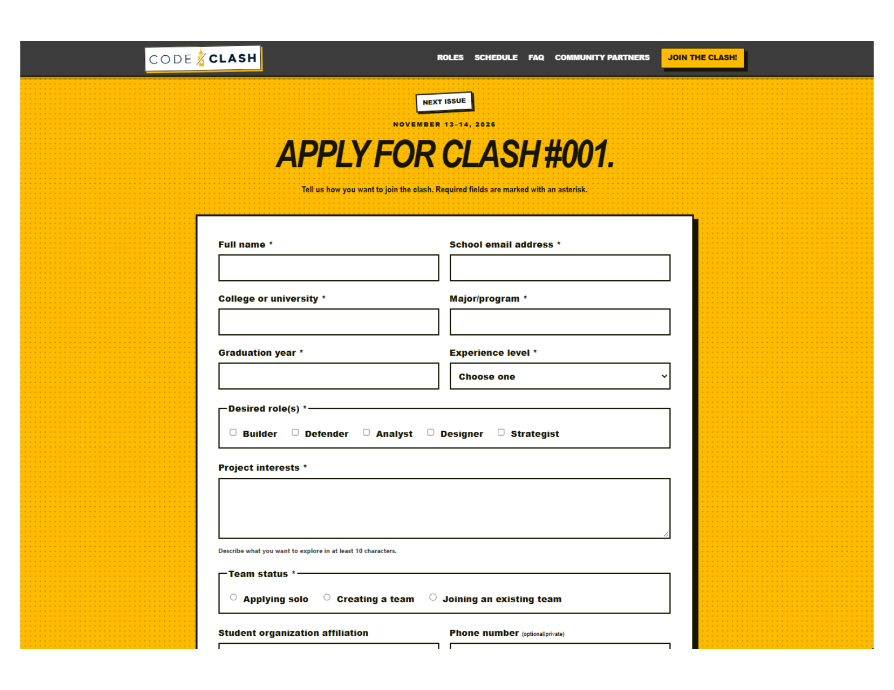

Registration experience
One journey across the event's tools
The current plan extends beyond the original embedded application form. Students first confirm the event is right for them, then move through registration and into the competition workspace.
- 01Discover
Review the date, format, roles, schedule, and FAQs on the live event site.
- 02Register
Follow the external registration handoff and provide participation, team, dietary, and accessibility information.
- 03Compete
Use Devpost for the competition workflow and project submission as event planning is finalized.
